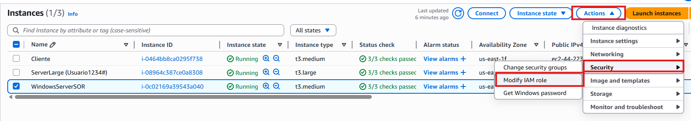
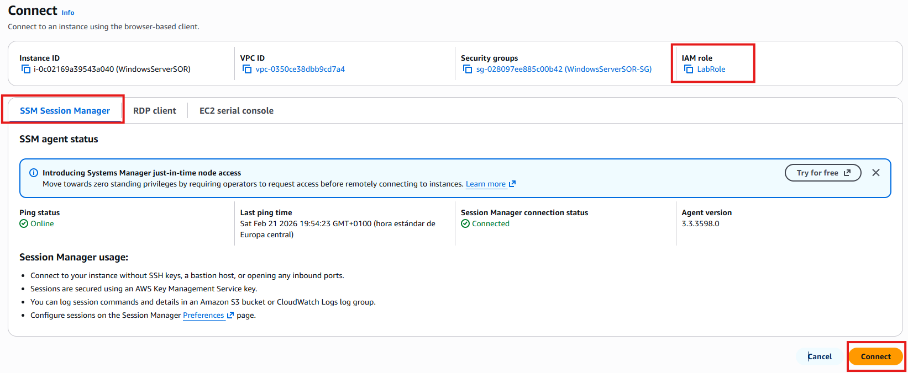
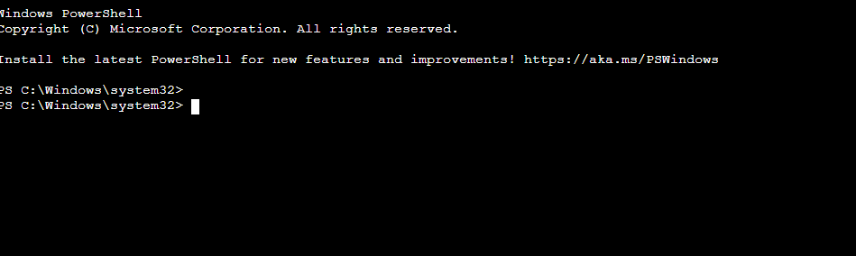

AWS-CLI.¶
Objetivo.¶
Vamos a crear una máquina EC2 con Windows Server e instalar el rol de AD, DNS, Impresión y de Compartición de Recursos.
La máquina EC2 tendrá las siguientes características:
- Nombre: WindowsServerSOR
- Tipo: t3.medium
- Clave: vockey
- Almacenamiento: 45GB (gp3)
-
Seguridad:
⚠️ Permitir el tráfico desde cualquier lugar del protocolo RDP.
⚠️ Permitir todo tipo de tráfico proveniente de la red interna de aws (VPC).
-
IP Elástica.
Averiguar cuál es la última versión de la cual dispone AWS.¶
aws ssm get-parameters-by-path --path /aws/service/ami-windows-latest –query "Parameters[].Name" | grep 2025 | grep English | grep Base
Script de AWS-CLI.¶
El siguiente script:
-
Crea una EC2 de Windows Server.
-
Modifica las opciones de DHCP para que los clientes tengan como DNS el servidor.
#!/bin/bash
#Se detiene si el script detecta algún error.
set -e
#Variables.
INSTANCE_NAME="WindowsServerSOR"
SG_NAME="WindowsServerSOR-SG"
KEY_NAME="vockey"
INSTANCE_TYPE="t3.medium"
echo "Obteniendo VPC por defecto..."
VPC_ID=$(aws ec2 describe-vpcs \
--filters Name=isDefault,Values=true \
--query "Vpcs[0].VpcId" \
--output text)
#Obtiene el CIDR de la red para aplicarlo en el grupo de seguridad.
VPC_CIDR=$(aws ec2 describe-vpcs \
--vpc-ids $VPC_ID \
--query "Vpcs[0].CidrBlock" \
--output text)
echo "VPC: $VPC_ID"
echo "CIDR: $VPC_CIDR"
echo "Obteniendo última AMI Windows Server 2025..."
AMI_ID=$(aws ssm get-parameters \
--names /aws/service/ami-windows-latest/Windows_Server-2025-English-Full-Base \
--query "Parameters[0].Value" \
--output text)
echo "AMI: $AMI_ID"
echo "Comprobando si existe el Security Group..."
SG_ID=$(aws ec2 describe-security-groups \
--filters Name=group-name,Values=$SG_NAME Name=vpc-id,Values=$VPC_ID \
--query "SecurityGroups[0].GroupId" \
--output text 2>/dev/null)
if [ "$SG_ID" != "None" ] && [ -n "$SG_ID" ]; then
echo "El Security Group ya existe: $SG_ID"
else
echo "Creando Security Group..."
SG_ID=$(aws ec2 create-security-group \
--group-name $SG_NAME \
--description "SG para $INSTANCE_NAME" \
--vpc-id $VPC_ID \
--query "GroupId" \
--output text)
echo "Añadiendo reglas de seguridad..."
# RDP desde cualquier lugar
aws ec2 authorize-security-group-ingress \
--group-id $SG_ID \
--protocol tcp \
--port 3389 \
--cidr 0.0.0.0/0
# Todo el tráfico dentro de la VPC
aws ec2 authorize-security-group-ingress \
--group-id $SG_ID \
--protocol -1 \
--cidr $VPC_CIDR
echo "Security Group creado: $SG_ID"
fi
echo "Lanzando instancia EC2..."
aws ec2 run-instances \
--image-id $AMI_ID \
--instance-type $INSTANCE_TYPE \
--key-name $KEY_NAME \
--security-group-ids $SG_ID \
--block-device-mappings '[{
"DeviceName": "/dev/sda1",
"Ebs": {
"VolumeSize": 45,
"VolumeType": "gp3",
"DeleteOnTermination": true
}
}]' \
--tag-specifications "ResourceType=instance,Tags=[{Key=Name,Value=$INSTANCE_NAME}]" \
--associate-public-ip-address
echo "Esperando a que esté en estado running..."
aws ec2 wait instance-running --instance-ids $INSTANCE_ID
echo "Comprobando si ya tiene Elastic IP asociada..."
EXISTING_EIP=$(aws ec2 describe-addresses \
--filters Name=instance-id,Values=$INSTANCE_ID \
--query "Addresses[0].PublicIp" \
--output text)
if [ "$EXISTING_EIP" != "None" ] && [ -n "$EXISTING_EIP" ]; then
echo "La instancia ya tiene Elastic IP: $EXISTING_EIP"
PUBLIC_IP=$EXISTING_EIP
else
echo "No tiene Elastic IP. Creando una nueva..."
ALLOC_ID=$(aws ec2 allocate-address \
--domain vpc \
--query "AllocationId" \
--output text)
aws ec2 associate-address \
--instance-id $INSTANCE_ID \
--allocation-id $ALLOC_ID
PUBLIC_IP=$(aws ec2 describe-addresses \
--allocation-ids $ALLOC_ID \
--query "Addresses[0].PublicIp" \
--output text)
echo "Elastic IP creada y asociada: $PUBLIC_IP"
fi
echo "Creando nuevas DHCP Options..."
# Comprobar si ya existe un DHCP Options Set con ese nombre
DHCP_ID=$(aws ec2 describe-dhcp-options \
--filters Name=tag:Name,Values=sor-dhcp \
--query "DhcpOptions[0].DhcpOptionsId" \
--output text 2>/dev/null)
if [ "$DHCP_ID" != "None" ] && [ -n "$DHCP_ID" ]; then
echo "DHCP Options ya existe: $DHCP_ID"
else
echo "Creando DHCP Options sor-dhcp..."
DHCP_ID=$(aws ec2 create-dhcp-options \
--dhcp-configurations \
Key=domain-name,Values=sor.com \
Key=domain-name-servers,Values=$PUBLIC_IP,8.8.8.8 \
--query "DhcpOptions.DhcpOptionsId" \
--output text)
# Añadir tag Name=sor-dhcp
aws ec2 create-tags \
--resources $DHCP_ID \
--tags Key=Name,Value=sor-dhcp
echo "DHCP Options creado: $DHCP_ID"
fi
echo "Asociando DHCP Options a la VPC..."
aws ec2 associate-dhcp-options \
--dhcp-options-id $DHCP_ID \
--vpc-id $VPC_ID
echo "DHCP Options aplicado a la VPC $VPC_ID"
Ejecutar PowerShell desde aws-cli (SSM).¶
Vamos a activar los roles de Windows Server desde AWS-CLI.
La manera correcta no es “inyectar” PowerShell por SSH/RDP, sino usar AWS Systems Manager (SSM).
- Con SSM puedes ejecutar comandos remotamente en Windows usando la función AWS-RunPowerShellScript.
Activar el LabRole en el servidor Windows Server.¶
1️⃣ Modificamos Rol de la máquina servidora a LabRole.

2️⃣ Conectamos mediante SSM.


3️⃣ Comprobación de que funciona desde CloudShell.
aws ssm send-command --instance-ids i-XXXXXXXXXXXXXXX --document-name "AWS-RunPowerShellScript" --parameters commands="Get-Service"
Cambiar el nombre del servidor.¶
Antes de Instalar los roles vamos a cambiar el nombre del servidor.
Este cambio requiere un reinicio, por lo que no será instantáneo.
COMMAND_ID=$(aws ssm send-command \
--instance-ids i-XXXXXXXX \
--document-name "AWS-RunPowerShellScript" \
--parameters 'commands=[
"Rename-Computer -NewName \"SORDC\" -Force -Restart"
]' --query "Command.CommandId" --output text)
Comprobación.¶
- Podemos comprobar si el comando SSM se ha terminado de ejecutar con éxito.
aws ssm get-command-invocation \
--command-id $COMMAND_ID \
--instance-id i-XXXXXXXXXXXXXXXX
- Cuando el Response devuelva 0 ya podemos proseguir con el siguiente script.
| Estado | |
|---|---|
En proceso |
-1 |
Terminado |
0 |
Fallo |
Diferente de 0,-1 |
Insalar los roles.¶
COMMAND_ID=$(aws ssm send-command \
--instance-ids i-XXXXXXXXXXXXX \
--document-name "AWS-RunPowerShellScript" \
--comment "Instalación AD DS + DNS + File + Print" \
--parameters 'commands=[
"$DomainName = \"sor.local\"",
"$NetbiosName = \"SOR\"",
"$SafeModePassword = ConvertTo-SecureString \"P@ssw0rd123!\" -AsPlainText -Force",
"Install-WindowsFeature AD-Domain-Services -IncludeManagementTools",
"Install-WindowsFeature DNS -IncludeManagementTools",
"Install-WindowsFeature FS-FileServer",
"Install-WindowsFeature Print-Server",
"Install-ADDSForest -DomainName $DomainName -DomainNetbiosName $NetbiosName -SafeModeAdministratorPassword $SafeModePassword -InstallDNS -Force"
]' --query "Command.CommandId" --output text)
Comprobación.¶
- Guardamos en una variable el ID del comando y consultamos su estado.
COMMAND_ID=$(aws ssm send-command ... --query "Command.CommandId" --output text)
#Consultar el estado.
aws ssm get-command-invocation \
--command-id $COMMAND_ID \
--instance-id i-XXXXXXXXXXXXXXX
Recuerda que este proceso conlleva un reinicio y por tanto en algún momento puede devolver un Timeout.